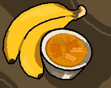

Banana Ketchup

What is it?
"Banana ketchup, also known as banana sauce (in export markets), is a Philippine fruit ketchup condiment made from banana, sugar, vinegar, and spices. Its natural color is brownish-yellow but it is often dyed red to resemble tomato ketchup. Banana ketchup was first produced in the Philippines during World War II due to a shortage of tomatoes but a comparatively high production of bananas.". Yep, i grabbed this entire paragraph from Wikipedia, and the rest of the recipe from Serious Eats.
Ingredients
- 2 tablespoons peanut or vegetable oil
- 1/2 cup finely chopped sweet onion (about 1 small onion)
- 2 teaspoons minced garlic (about 2 medium cloves)
- 1 tablespoon finely chopped seeded jalapeño (about 1 small jalapeño)
- 2 teaspoons freshly grated ginger
- 1/2 teaspoon ground turmeric
- 1/4 teaspoon ground allspice
- 1 1/4 cups mashed ripe bananas (about 4 large bananas)
- 1/2 cup white vinegar
- 2 tablespoons honey
- 2 tablespoons rum
- 1 tablespoon tomato paste
- 1 tablespoon soy sauce
- 1/2 teaspoon salt, plus more to taste
- Water, as needed
How?
- Heat oil in a medium saucepan over medium heat until shimmering. Add onions and cook, stirring occasionally, until onions have softened, about 5 minutes. Add garlic, jalapeño, ginger, turmeric, and allspice and cook until fragrant, about 30 seconds.
- Stir in bananas, vinegar, honey, rum, tomato paste, soy sauce, and salt; bring to simmer. Reduce heat to low, cover, and cook for 15 minutes, stirring often. Remove from heat and let cool for 10 minutes.
- Transfer ketchup to a food processor fitted with a steel blade and process until smooth, about 1 minute. Thin with water as needed to reach a ketchup-like consistency. Season with additional salt to taste. Transfer to an airtight container and store in refrigerator for up to 2 weeks.
Awesum sauce! Enjoy!